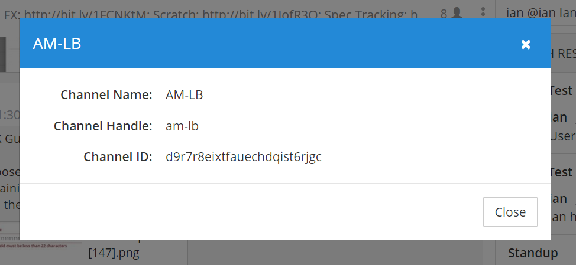
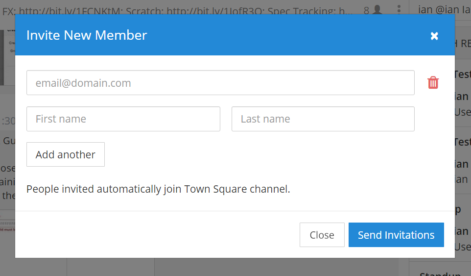
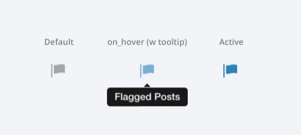
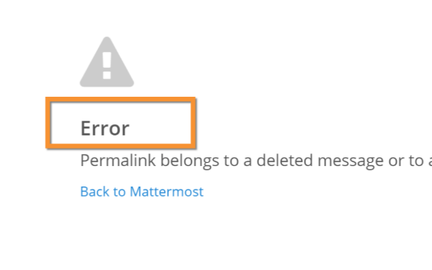
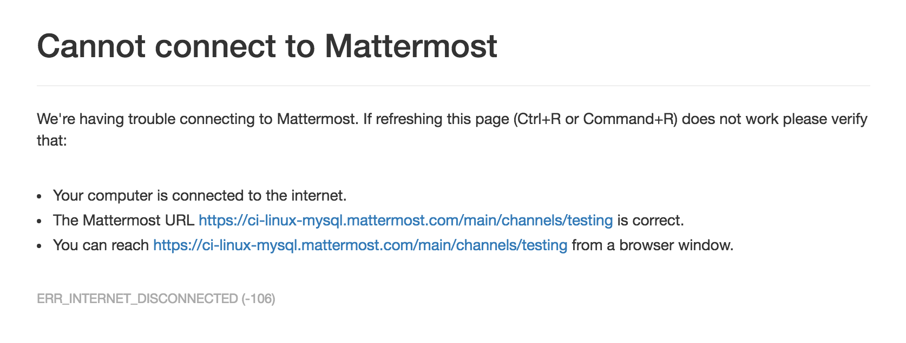
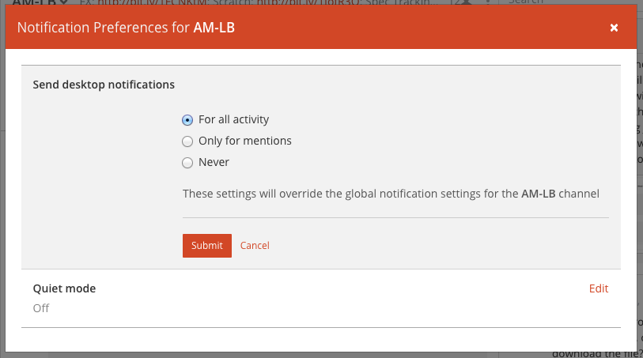
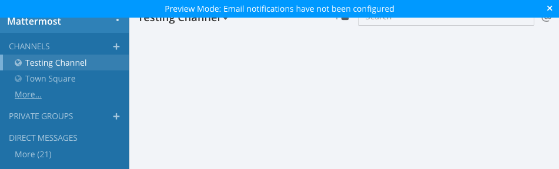
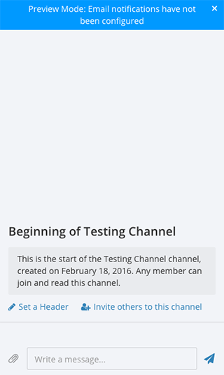
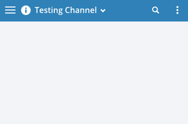
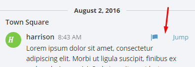

User Experience Guidelines¶
The purpose of the Mattermost User Experience Guidelines (“UX Guidelines”) is to deliver a level of usability and consistency that turns users of Mattermost software into fans of the Mattermost experience.
- Design Principles
- Technical Guidelines
- Minimum Display Requirements
- UX Feedback Guidelines
- Design Guidelines
- Display: Alignment
- Display: Button Placement
- Display: Button States
- Display: Icons
- Display: Instructions
- Display: Username display
- Display: Number of Choices
- Feedback: Error Messages
- Input: Fields
- Input: Hints
- Input: Input Patterns
- Input: Validation
- Menu items
- Notifications: Header Bar
- Markdown Rendering
- Organization: Reduce Obvious Steps
- Testing Checklist
Design Principles¶
These principles define the standard we’re setting for the Mattermost experience.
1) Fast, Obvious, Forgiving¶
Fast
Fast has two parts: being “responsive” and being “quick”.
Responsive means when a user clicks, taps, types or otherwise enters input we give immediate feedback that the input is received and something is happening. It could be a spinner animation, or just some text saying “Loading”, but something always responds to the user.
Quick means things happen as soon as they can. Loading pages, sending messages, receiving notifications and other vital actions should be automatically benchmarked for performance. Bugs should be opened on performance regressions.
Obvious
There is no such thing as “user error”–it’s always our fault as product designers. We stop problems from incorrect usage by making users aware of correct usage. Fixes could be through user interface improvements, adjustments to help text, or helping users recover when things go wrong–adding undelete, undo and rolling back for example.
When our product is correct, users are never confused. Everything we do–features, interface layout, labeling, help text, and documentation–needs to make sense in the mind of the user, even if it means occassionally oversimplifying how things technically work.
If a user doesn’t understand how to use a feature, all the underlying effort and code is wasted. The “Obvious” design principle also flows through to our Documentation Guidelines.
Given Hick’s Law, core functionality should be apparent, and advanced functionality should be possible via sub-menus and well documented and tested. Functionality that is not fundamental to the product purpose should be ruthlessly omitted.
Use design patterns familiar to our audience–general non-technical users for the core messaging experience, IT administrators for configuration experience, developers for the developer experience. Mattermost UX should be drawn from patterns and derivations of other experiences in a mix of familiar approaches. Remember: Software is an invention–there’s nothing “intuitive” about it, there is only what is familiar.
Forgiving
There will be unavoidable product failures, whether through technical issues like loss of connectivity or through our inability to make the user aware of correct usage. Being forgiving means reducing the negative impact users encounter during failures–not losing their data, not deleting, updating or sending something they didn’t intend to send, and so forth.
Features like confirmation dialogs on critical actions or temporarily saving user input in case of disconnect are examples of forgiveness.
That said, forgiving does not mean allowing the product to be used incorrectly, and breaking the obvious principle. As an analogy, if someone kicks a football and misses the goal, being forgiving means giving them a chance to kick again, it does not mean counting the miss as a goal.
2) International, Compatible, Priority-focused¶
International - Design with an international, multi-lingual audience in mind. Use patterns and language without US, Western or culture-specific references when possible.
Compatible - When aligned with our other design principles, we should deploy UX and integration patterns from the other products for which we support the import of teams and users.
Priority-focused - Communication is a starting point towards the end goal of helping users within an enterprise achieve their highest priorities through modern communication. We prefer term “messaging” to convey the sending of thoughtful communications that moves ideas forward, to the term “chat”, which doesn’t imply progress.
Technical Guidelines¶
Bootstrap Classes¶
Since we’re using bootstrap, try to utilize bootstrap classes as much as possible rather than creating new styles or using inline styles.
Custom Styles¶
We’re using BEM methodology and would advise everyone to do so when creating new classes or ids. There’s a lot of places in our app that currently don’t follow BEM but we’re trying to improve the codebase. Here is a brief overview of the BEM syntax.
UX Feedback Guidelines¶
User experience design is a discipline drawing from ergonomics, ethnography, human factors research, and cognitive psychology. It’s evaluated qualitatively with tools like heuristic evaluation and cognitive walkthroughs, and quantitatively through telemetry, anonymous usage data and other automated diagonistics.
As with any design process, iteration, prototyping, informed critique and evaluation is vital to doing our best work. Developing the skill of informed critique in our community increases the quality of our designs and of our product.
This guide outlines the levels of UX feedback in order of positive impact in order to guide contributors towards the behaviors that best advances a fast-moving, asychronously-developed open source product.
Entry-level UX feedback: Authentic questions or suggestions for design changes, presented with good intentions, coming from personal preferences with less than 2 minutes spent thinking about the pros and cons of the changes the feedback suggests.
Example 1: Well intentioned suggestion that does not consider pros and cons.
Why not change channel length from 22 characters to 50 characters?
Example 2: Attempt to help provide “input” in a design discussion, but instead of using objective criteria such as audience, community, customers, examples, research, or principles, expresses a political “vote” that may bias or confuse a design discussion.
+1, that is my personal preference!
While it’s important to welcome people sharing entry-level feedback, and to extract from it useful ideas where possible, if entry-level feedback begins to unintentionally shut out more constructive feedback, a private note might be sent to the contributor with something like: “Highly appreciate your good intentions to share UX feedback. May I ask your help to review Mattermost’s UX Feedback Guidelines (link)?”
Intermediate UX feedback: - Comments, critique or questions about design with thoughtful consideration–including trade-offs–of the goal and principles of a design, along with UX principles of the project, and patterns from other products.
Feedback speaks for itself, with relevant references to principles, audience, research and other objective criteria. May include descriptions of experience using the feature or similar features that can be generalized to the intended audience,
Example: Thoughtful suggestion listing trade-offs that reference principles.
What if we used a reply icon, similar to replies in email, for the comment function? Screenshots below. Pros: a) More familiar to email users. b) More distinct than the word ballon icon typically used for “Comment”, which is too easily confused for “Message”. Cons: i) We use the symbol of “Reply” for “Comment” (the UI has an “Add Comment” button in the UI), which could be confusing. ii) When we add a “Forward” icon later to move a message to a different channel, the “Reply” and “Forward” metaphors may get muddled”.
UX feedback at intermediate level or higher is highly appreciated. It should be encouraged and recognized as a substantial contribution to the design process.
Advanced UX feedback: - Constructive feedback that enlightens a design discussion, shares fact-based heuristics, helps clear blindspots and inconsistencies, and significantly improves a design, and potentially design guidelines. Analysis naturally considers variations needed across web, PC and mobile experiences.
Example: Noticing a design issue and influencing a change in UX guidelines to correct things system-wide.
A menu with 10 items without groupings seems too long. Both Apple (link) and Windows (link) user interface guidelines suggest fewer than 7 options before grouping. I’d propose we use fewer than 5. There’s research showing 5 items as an amount most people can comfortably store mentally (link), and looking through other products I don’t see situations where we wouldn’t be able to group by 5. Also, fewer menu items, perhaps through sub-menus, should also help mobile, where ungrouped 10 item menus just look messy. I’ve added a PR on UX guidelines where we can discuss this as well.
Design Guidelines¶
Display: Alignment¶
Elements should feature margins horizontally and vertically, evenly spaced.
Create space between elements, such as buttons, text, line separators, headers and backgrounds, by leaving even space around them (either equal space or at most 1 pixel difference).
Horizontally align multi-line elements along a vertical line.
Example:
- Roles right justified with respect to the text and irrespective of the icon.

Display: Button Placement¶
Button in the footer of the dialog should either be “Close”, or “Cancel” and [ACTION_BUTTON].
If there’s one button on the bottom right, it should be “Close”, if there are two, the one on the left should be “Cancel” and the one on the right should be an [ACTION_BUTTON], like “Save” or “Send Invitations”.
Example:
- Correct:
Single button at the bottom right should be “Close”.
- Correct:
When there are two buttons on bottom right, left button should be “Cancel” and the button on the right should be the [ACTION_BUTTON], in this case “Send Invitations”.

- Incorrect:
When there are two buttons at the bottom right, left button should not be “Close”, as it’s not clear if closing will or won’t execute the [ACTION_BUTTON].

Display: Button States¶
All buttons should have a visually distinct appearance for the following states (if applicable):
- default
- on_hover / on_hover (w tooltip)
- active
- disabled (greyed out or hidden)
The color of the on_hover state should be the same as in active state, with opacity = 0.7.
Example:

Display: Icons¶
- When to use icons
- When there’s not enough space for the label and an icon can easily represent the label.
- When an icon can help the user more quickly understand a feature.
- When not to use icons
- When the term/phrase is too specific or complicated.
- Icons should vary across different options
- When using icons, different options in the same section should have different icons.
- Testing
- File a bug if the icon is difficult to understand or has cosmetic defects (size, blur, etc.)
- File a bug when an icon doesn’t obviously indicate the underlying feature
Display: Instructions¶
Instructions should be sentences, one-line links should be fragments.
Instructions, such as “A password reset link has been sent to you@email.com for your account. Please check your inbox.”, should be displayed as sentences ending in periods. One-line links, such as “Find it here”, should not end in periods or commas, but question marks are okay.
Example:
- Correct:
Instruction “Please check your inbox”, ending with a period.

- Incorrect:
Instruction “Please check your inbox”, ending without a period.

Display: Username display¶
Usernames should be preceded by the @ icon in all places except for the Direct Messages list in the left-hand sidebar, and for any post or comment made by the user.
Examples of where an @ icon should precede the username are as follows:
- User list in the system console.
- Autocomplete.
- Members list for the current channel.
Display: Number of Choices¶
To simplify decisions, when practical, limit the number of choices to 3 or 4, and add separators or headings between logical groups. See Hick’s Law for background on why this helps.
Example:
- Incorrect:
No clear separation between distinct options.

- Correct:
A clear separation between distinct options.

Feedback: Error Messages¶
On occasion, Mattermost users may encounter a problem that prevents them or the Mattermost system from successfully completing a task. The unexpected user behavior or system response should be communicated to the user through an error message, and should follow the design principles of forgiving and obvious.
Error messages should:
- State the encountered problem with the component in the title (e.g. Team URL Not Found).
- Describe very briefly why the error happened under the title.
- When possible, have a link to direct users to help complete their original task or return to the previous state.
- Give recommendations/solution(s) for the next course of action.
- Be consistent with the Mattermost voice and look professional.
- Be avoided when possible (by avoiding the error condition).
Error messages should not:
- Be in red or in capital letters.
- Say or have the term “Error”.
- Be lengthy.
- Be generic.
- End in an exclamation point.
Examples:

- Incorrect:
- This is an example of a bad error message:

- Correct:
- This is an example of a good error message:
Input: Fields¶
Users should enter information into fields without much thinking. Enter button on last input field should trigger default dialog button.
Example 1:
If focus is on the last input field in dialog (“Miller”), hitting Enter triggers the default dialog button (“Send Invitations”)

Example 2:
Having radio buttons for input options. NOTE: We should use radio buttons/checkboxes for input options rather than custom bootstrap on/off switches.

Input: Hints¶
Mattermost voice for documentation and help text follows this simple guideline: explain something to a user with basic computer skills in simple terms without jargon or complexity.
Fieldname:
The labels on input fields should be clear and concise for the intended user. Consider the surrounding UI for consistent naming of input fields with similar actions.
- Correct:
- Channel URL: The web address used to reach your channel.
- Incorrect:
- Handle: The name of the subdirectory used to navigate to a channel using the site URL appended with the handle name. Must use only valid URL inputs
The fieldname of a setting should explicitly describe what a setting affects.
- Correct:
- Automatically expand link previews
- Incorrect:
- Link previews
Help text:
Text below an input field should clearly and concisely describe the purpose of the input in an active voice.
In general, avoid describing the technical requirements of the field in Help Text, and use Placeholder input text, field validation and error messages to convey requirements. The exception to this guideline is if requirements are non-obvious, such as passwords needing different numbers of characters, symbols, etc.
For a setting involving a CONDITION and an ACTION, the help text should be written as “ACTION when/for CONDITION”
- Correct:
- Flash the taskbar icon when a new message is received.
- Incorrect:
- When a new message is received, flash the taskbar icon.
Ensure plural interpretations work when applicable and test help text with machine translation to reduce non-obvious, English-specific jardon:
- Correct:
- You can adjust a few configuration settings when setting up your instance of Mattermost.
- Incorrect:
- There are a few configuration settings you might want to fiddle with when setting up your instance of Mattermost.
Note: The incorrect string above machine-translated into German and then back into English becomes: “There are some configuration settings you could know if your instance Matter Most violin”.
Placeholder input text:
Show examples of valid input, such asname@example.comfor email addresses, as well as examples of functionality that is not obviously supported. For example, for a channel name field the placeholder input text could beExample: Marketing, John’s Room, 中国业务.
Field validation:
Use field validation to help prevent or correct any mistakes a user might make.
For textfields, restrict users from making entries that are too long by limiting characters via the
maxlengthattribute.For textareas, show a character counter and then a helpful message if the user exceeds the maximum number of characters.
Example 1:
Example 2:
If a user enters invalid uppercase letters and spaces for a URL, show an error message and also offer a correction, substituting dashes for spaces and lower case letters for uppercase letters, so the user can resubmit immediately with valid input.
Input: Input Patterns¶
All inputs such as textareas should behave consistently. If the default behavior is to perform an action on “Enter”, then all inputs of that type should be consistent and perform an action on “Enter”.
- Example 1:
If pressing “Enter” posts a message in the center channel post input.

- Example 2:
Then pressing “Enter” in the comment thread textarea should also post a comment.

- Example 3:
And other textareas or inputs should also perform their primary action when “Enter” is pressed, here’s an example of the “Edit Header” modal.

Input: Validation¶
Feedback on action:
User should be notified about the action they perform along with any implications associated with them.
- Example 1:
“Settings are saved but will be applied after a server restart.”

- Example 2:
“Link copied to clipboard.”

Save prompt:
A prompt should appears if a user makes changes to a setting and attempts to navigate away without saving them.
- Example:
“You have unsaved changes, are you sure you want to discard them?”

Menu items¶
Items in a menu should be grouped together based on the category they belong to. Items per category however should not exceed five, with the exception of seven for the System Console.
Example:

Notifications: Header Bar¶
The header bar appears as a dropdown bar from the top of the screen. The header bar:
- May include an “x” button to dismiss.
- Is limited to 60 characters.
- May include a time-out.
- Appears over the rest of the UI instead of pushing the UI down.
Multiple headers can appear, with the earliest notification at the top and more recent notifications appearing underneath.
Desktop

Mobile

There are several modes for this element:
System-wide header notification:
- Triggered on login.
- Includes “x” button to dismiss.
- No timeout.
- Removed when system admin cancels.
Examples:“Try our new Windows App. Click here to download.”,“Scheduled maintenance 2:00am to 2:30am starts in 20 minutes, 3 seconds.”Action required header notification:
- Triggered on login.
- No “x” button to dismiss.
- No timeout.
- Dismissed when action completed.
Examples:“We’re evolving. Please review and accept our new terms of service.”Persistent issue header notification:
- Triggered on issue.
- No “x” button to dismiss.
- Dismissed when issue no longer persists.
Examples:“You are not connected to the internet.”
Markdown Rendering¶
Markdown rendering in Mattermost is designed to be a fast, obvious, forgiving formatting standard for a messaging application. To achieve this goal, it has variations from markdown in GitHub (the most wildly used implementation), including:
- Bullets directly below a line of text render as a bullet, not as a continued line of text
- {Other variations to be concisely listed here, one line each}
While we intend to eventually document all the variations from GitHub markdown, until that is complete we consider any variation in rendering from the current release of Mattermost to be a regression that should either be fixed prior to the next release, or documented here.
Currently the /test tool can be used for testing Mattermost markdown versus GitHub markdown, and we have a ticket to update the tests for Mattermost markdown specifically.
Organization: Reduce Obvious Steps¶
If the action users need to perform is obvious, we should make conscious decisions to reduce some of the steps involved in that process.
- Example 1:
Clicking on the search icon on mobile should focus the search bar when it slides in.
- Example 2:
Clicking on the reply icon should move the focus to the comment box in the right-hand sidebar.

- Example 3:
Switching channels should move the focus to the post box in the center channel.

Testing Checklist¶
In addition to above guidelines, the below provides a concrete checklist of mistakes to watch for when reviewing proposed product changes.
User Experience Checklist¶
1) Is the WHITESPACE next to icons SUFFICIENTLY SPACED?
Example of not enough space next to FLAG icon on RIGHT:

2) Is the WHITESPACE next to icons EVENLY SPACED?
Example of uneven icon spacing:

3) Are there visual GAPS?
Example of gaps in a visual design:

4) Read all help text OUT LOUD–is it helpful to a new user?
Example of help text that doesn’t communicate enough information to a user (no information included on how to use flagged posts):

5) Does the UI work with a dark theme?
Sometimes bugs are found with theme colors, so it’s important to test on both light and dark themes.

{kind=link}
{kind=link}
{kind=link}
{kind=link}
{kind=link}
{kind=link}
{kind=link}